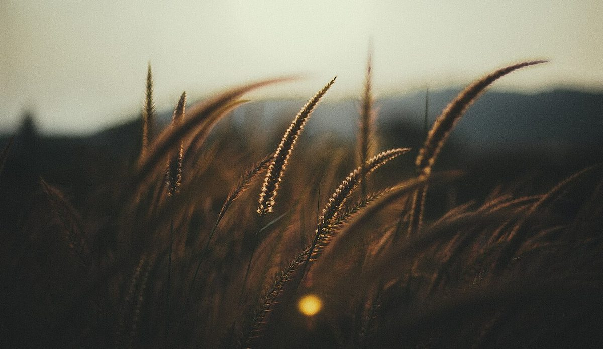

4 / 5 店のこと
店のこと
お店について確認できているのは、所在地とInstagramのアカウントだけです。
確認できていること
- 店名は「Bakery Tapan(ベーカリー タパン)」、業種はパン屋
- 所在地は長野県上田市常田3丁目4-32(〒386-0018)
- 電話番号はなし。連絡はInstagramから
- 営業時間・定休日・メニュー・価格・ご予約・駐車場は準備中

想像してみる(制作側の連想)
「pan」は横に振る撮影のこと
ここから先は、制作側が連想した読みものです。お店の実際の様子・考え・商品とは関係がありません。「pan」という響きから、写真や映像で視点を横へ滑らせる「パン」という言葉が浮かびました。このサイトの5ページは、その考え方で左から右に並べています。


